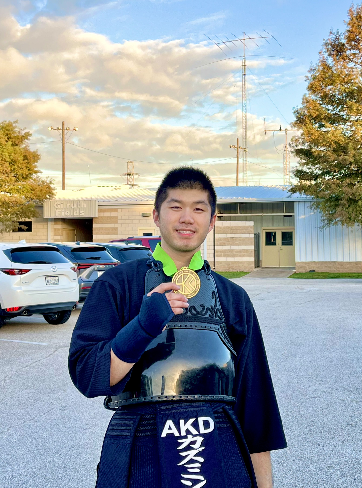

Department of Mechanical Engineering
The University of Texas at Austin<><
Hello! I'm a Mechanical Engineering PhD student in the Human-Enabled Robotic Technology (HeRo) Lab, where I am fortunate to be advised by the amazing Ann Majewicz Fey. I am currently interested in robotic fetal surgery and semi-autonomous control in surgical robotics. I am grateful to have my research supported by a Cockrell School of Engineering Fellowship.
I completed my undergraduate degree in Computer Engineering at The University of Texas at Dallas (UTD), where I did research in robotic surgery, created a solar-powered IoT pool sensor, and developed an indoor navigation system for the UTD campus. During this time, I was extremely thankful to be advised by Ann Majewicz Fey (now at UT!), Neal Skinner, and Ravi Prakash.
I became the Philanthropy & Outreach Coordinator of the new Texas Robotics Graduate Students (TRGS) organization. So far, I have hosted tours of the UT robotics labs at Anna Hiss Gymanasium with undergraduate STEM organizations such as IEEE-RAS and organized outreach events with high school robotics teams.
Next, I plan to promote and help faciliate undergraduate research with Texas Robotics, and establish a scholarship fund for prospective UT computer science and engineering undergraduates from low socioeconomic backgrounds.
| ID | Machine Learning | Programming & Software |
|---|---|---|
| 1 | Python | Java |
| 2 | R | C/C++ |
| 3 | MATLAB | LINUX |
| 4 | TensorFlow | ROS |
| 5 | Keras | SOLIDWORKS |
| 6 | PyTorch | CHAI3D |
| 7 | OpenCV | Unity |
| 8 | HTML 5 | Linux |
| 9 | scikit-learn | Git |
Whenever I'm free, I spend time weight lifting, practicing kendo, and going sailing.
You cannot change your fate. However, you can rise to meet it, if you so choose.-Princess Mononoke (1997)